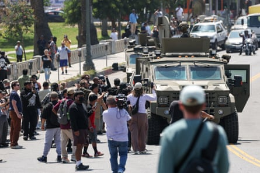

Dozens of federal officers in tactical gear and about 90 California national guard troops descended on a historic immigrant neighborhood in Los Angeles on Monday – mounting a sweeping show that local leaders denounced as a “reality TV spectacle” and intimidation tactic.
The troops were deployed to a mostly empty park in the MacArthur Park neighborhood for about an hour, some on horseback and others in armored military vehicles. Agents were also operating an armored vehicle with a mounted rifle.
It wasn’t immediately clear that any arrests were made. But the operation on Monday morning has drawn widespread criticism from city leaders, who have characterized the militarized immigration raid as an intimidation tactic.
“What I saw in the park today looked like a city under siege, under armed occupation,” said Karen Bass , the mayor of Los Angeles, who called it a “political stunt”.
Bass said that children who were attending a nearby day care had to be quickly ushered inside as agents swept through the neighborhood, including through its namesake park.
The agents arrived at about 10.30am, and left the neighborhood Bass spoke to a Department of Homeland Security representative, according to reporters at the scene.
The LA councilmember Eunisses Hernandez’s office also sent constituents a warning on Monday morning that federal forces had been deployed in the neighborhood, urging: “Please be careful and let your neighbors know.”
Activists and locals – who have for weeks been documenting the ramped-up immigration raids in LA and across southern California – had also come out to witness the scene, and were prepared to call in legal support if needed.
Federal agents at MacArthur Park on Monday.Photograph: Damian Dovarganes/AP
“I definitely think it’s a source of intimidation,” Jeannette Zanipatin, a lawyer with the Coalition for Humane Immigrant Rights (Chirla), told the Associated Press. “We know that the Trump administration is trying to make an example of Los Angeles.”
Chris Newman, legal director for the National Day Laborer Organizing Network, said he received a credible tip about the operation on Monday. “It was a demonstration of escalation,” he told the Associated Press. “This was a reality TV spectacle much more so than an actual enforcement operation.”
MacArthur Park has long been an immigrant neighborhood, with a history of political activism. In 2007, it was the center of the May Day rallies demanding amnesty for undocumented people, which were met with exceptional brutality by the Los Angeles police department.
The neighborhood was also where the Trump administration kicked off its ramped-up raids in LA, sending agents to arrest undocumented day laborers at the local Home Deport story and street vendors along bustling commercial corridors.
Onlookers watch as federal agents with US Customs and Border Patrol ride on an armored vehicle driving slowly down Whilshire Boulevard near MacArthur Park in Los Angeles, California.Photograph: Patrick T Fallon/AFP/Getty Images
Since the raids kicked off, the normally bustling neighborhood had emptied out – fewer street vendors had been selling food and wares along the sidewalk. Many undocumented workers were avoiding reporting to their jobs at restaurants and shops, parks and public spaces were eerily empty.
A defense official told reporters that the operation on Monday was not a military operation, but said that the size and scope of the guard’s participation could make it appear as one to the public, according to the Associated Press.
“It’s just going to be more overt and larger than we usually participate in,” one of the officials said before the raid ended abruptly with no explanation.
The primary role of the military service members would be to protect the immigration enforcement officers in case a hostile crowd gathered, that official said. They are not participating in any law enforcement activities such as arrests, but service members can temporarily detain citizens if necessary before handing them over to law enforcement, the official said.
“This morning looked like a staging for a TikTok video,” said Marqueece Harris-Dawson, president of the Los Angeles city council, adding if Border Patrol wants to film in LA, “you should apply for a film permit like everybody else. And stop trying to scare the bejesus out of everybody who lives in this great city and disrupt our economy every day.”